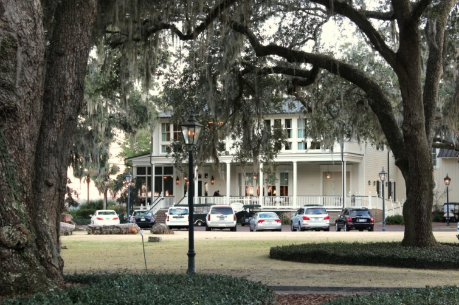

.png)
.PNG)
.PNG)
.PNG)
.PNG)
.PNG)
.JPG)
.JPG)
.PNG)
.PNG)


There were three developments that I wanted to visit when we went to Beaufort, South Carolina. One was Oldfield. One was Habersham, and the one I most wanted to see was the Inn at Palmetto Bluff. In fact, it was the place I wanted to stay, but unfortunately we made our reservations too late to find a room within our budget. But we did get to explore the resort one evening during our trip.
Right at dusk we wound our way through the Carolina low country outside of Bluffton and arrived in Palmetto Bluff. It was even more beautiful than I had hoped it would be. This was my idea of heaven. Truly. The setting sun gave the whole place a golden glow, and all the gas lamps of the resort were on. I can’t even begin to tell you how gorgeous it was.
The drive into the 22,000 acre resort is more than 4 miles long. Ruins of a mansion once owned by wealthy New York banker, Richard T. Wilson, Jr. stand outside the inn ready for exploration.

The inn is actually a collection of 50 cottages and suites. Among the numerous awards it has won is the title of Best Hotel in the Country in 2012 by U.S. News and World Report. I can see why. Not only are you surrounded by the beauty of the natural setting of the May River, but also the architecture and interior design details of the place are a feast for the eyes. Just step inside and take a look.
The bedrooms in the cottages are simple with a refined style. palmettobluff.com
palmettobluff.com
And then there is the dining…so many choices. travelodestination.com
travelodestination.com
There is a little market right as you come into the village for you to pick up any needed items.
And also a selection of shops further into the resort.

There is seating scattered around the outside of the shops for further relaxation.
Finally, there is The Chapel at Palmetto Bluff – the ultimate place of calm in the village. Modeled after a small church on Edisto Island, its floors are made of wide heart pine planks. To make the pews, three thousand pounds of antique heart pine recovered from a building destroyed in the September 11 attacks on New York were used.


Its foundation and steps are made from hand molded bricks, and in its steeple is a handcrafted bell. 
In each of my South Carolina posts, I have left you with a pretty view to enjoy until our next post. Today I hope you will enjoy the wicker rockers and the view of this little chapel with the river flowing behind it.
We will take a look at the charming homes of Palmetto Bluff in part 2. See you then!
until next time….


.PNG)
Truly a remarkable place! 22,000 acre resort? Oh my goodness, it’s lovely. Thanks for letting us tag along on the tour with you!
Jan ♥
———————————————————————–
Jan – Yes, it is 22,000 acres. Thank YOU for tagging along with me through the internet. 🙂
Kelly
Hi Kelly! This part of the country is a favorite of my husband and myself. We have been privileged to stay at Palmetto Bluff on two occasions, my husband’s 50th birthday and our 25th wedding anniversary. Each time we drove thru the gate, a sense of peace and calm filled the car. The beauty of our surroundings, charm of our Cottage home, activities and delicious food made both trips extremely special and difficult to leave at the end of each stay! Thank you for the beautiful pictures of this special place on the May River.
———————————————————————–
Susan- We are all so jealous!! How wonderful that you have experienced the beauty of Palmetto Bluff twice. 🙂 I do plan on going back and staying there on another vacation. I certainly felt the sense of peace and calm that you wrote of here as we walked around the resort. Such a gorgeous place.
Kelly
Kelly, if you ever stop teaching I think you should be a travel agent ! These pictures are beautiful!
I was waiting to tell you about our summer plans. Remember last summer we went to Maine? We really wanted to go back this summer so my husband could play golf on their courses and also see FDR’S summer home, Campobello, in New Brunswick,Canada. While he was researching, he came across a fabulous golf course in New Brunswick in a town called St. Andrew by the Sea. They also have knitting shops!
So we a going to fly into Boston and spend the first day driving along the Maine coast to New Brunswick. I am so excited and will be sure to take lots of pics. Of course we are not going until July!
————————————————————————
Wanda – Oh I am JEALOUS!!! This sounds like a fantastic trip. The drive along the coast will be amazing. And you won’t be as cold in July as I was in June (but do take a sweatshirt or two. :)) I am excited for you!
Kelly
I am in love with that chapel. Completely charming. Maybe one of my boys will marry a girl from there someday. What an awesome intimate wedding venue that would make!
——————————————————————-
Julianna – My thoughts too…well not my sons, but I told my daughter she should be looking at it for a site when she gets married. She is now wanting to be a wedding planner. She was looking at a business degree, and I told her it would take a lot more than that…a hospitality degree..catering experience..etc. I told her to do some research to see what I was talking about. She did, and the first thing that popped up on her search…The Inn at Palmetto Bluff Wedding Design Studio! Perhaps one day she can work there. 🙂
Kelly
Oh Kelly. Just my kind of place. I love every thing about it. It is so beautiful it really takes my breath away. Palmetto Bluff is now at the top of my list for my next place to visit. You always find the best places. Great post.
——————————————————————
Yarlette – Isn’t it great?! And you definitely must visit. I want to go back and stay there for sure. Even in the dead of winter it would be nice I think.
Kelly
Wow, Kelly! The thing that strikes me is that most of the rooms you’ve shared resemble a beautiful home, not an inn. I love the traditional decor of each of the places you’ve shared. I really must take a vacation in the South!
Karen
———————————————————————-
Karen – I think some of the rooms are in homes, but I cannot tell which ones. So many of the homes are on their rental list and rented through the inn. Even the large one with the red roof can be rented. I know you would enjoy a trip to the South, so go ahead and put it on your calendar. 🙂
Kelly
The little chapel is fascinating! What a good job they did with all the period details – and using reclaimed wood from a 9/11 location – wow, how moving.
——————————————————————–
Sarah – I thought the little chapel was charming, and yes, the wood made it even more special. I told my daughter she needed to get married there! Ha ha.
Kelly
Kelly, I love checking out your blog. You have the most beautiful pictures and you are a super tour guide to places I have never heard of and now hope to see.
———————————————————————-
Cheri- Thank you so much for the compliments! I love to travel to beautiful places, and Palmetto Bluff was about as beautiful as it can get. I am so glad you enjoyed the photographs.
Kelly
Oh, Kelly! This is beautiful! I can see why you would’ve wanted to stay here. That little chapel just makes me happy to look at it, and the inn and cottages are lovely. I also think the mansion ruins are pretty cool…but I’m into stuff like that. 😉 I love learning about the history of people and places. Can’t wait to see Part 2, but I’ll be satisfied just to sit in one of those wicker rockers and gaze at the chapel until then.
Great post!
Amy O’Quinn
———————————————————————-
Amy – All of Palmetto Bluff was just gorgeous! There was something there for everyone – history buffs, food connoisseurs, outdoors-y types, shoppers, and those of us who just like to relax. I dearly want to go back and stay there.
Kelly
I’ve loved taking this trip with you! This is by far my favorite destination. Every single thing is charming. Can’t wait to see the homes!! Thank you!
——————————————————————–
Barbara – It was a fun and fun-to-see trip! Glad you enjoyed “going along”. I have another one in mind for early April that you should enjoy, too. Palmetto Bluff was my favorite, too.
Kelly